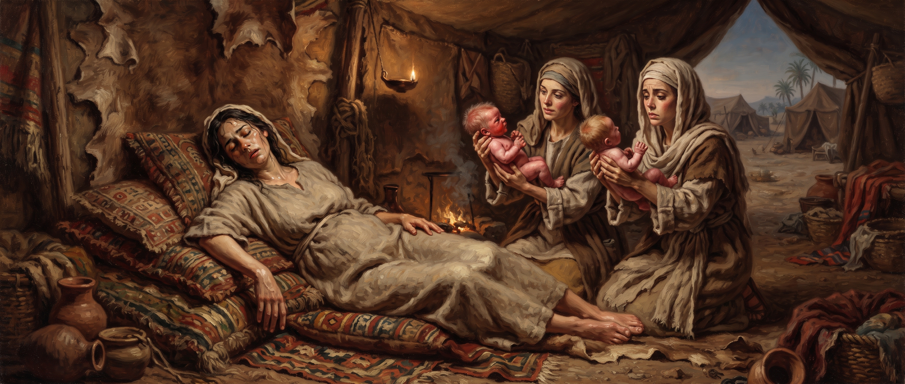
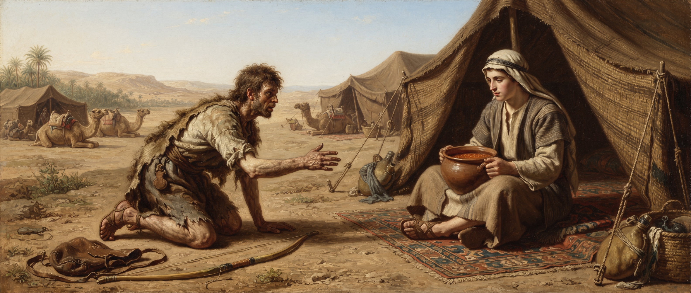

Genesis
Chapter Twenty-Five
King James Version
Then again Abraham took a wife, and her name was Keturah. 2And she bare him Zimran, and Jokshan, and Medan, and Midian, and Ishbak, and Shuah. 3And Jokshan begat Sheba, and Dedan. And the sons of Dedan were Asshurim, and Letushim, and Leummim. 4And the sons of Midian; Ephah, and Epher, and Hanoch, and Abida, and Eldaah. All these were the children of Keturah.
5And Abraham gave all that he had unto Isaac. 6But unto the sons of the concubines, which Abraham had, Abraham gave gifts, and sent them away from Isaac his son, while he yet lived, eastward, unto the east country.
7And these are the days of the years of Abraham's life which he lived, an hundred threescore and fifteen years. 8Then Abraham gave up the ghost, and died in a good old age, an old man, and full of years; and was gathered to his people. 9And his sons Isaac and Ishmael buried him in the cave of Machpelah, in the field of Ephron the son of Zohar the Hittite, which is before Mamre; 10The field which Abraham purchased of the sons of Heth: there was Abraham buried, and Sarah his wife. 11And it came to pass after the death of Abraham, that God blessed his son Isaac; and Isaac dwelt by the well Lahairoi.
12Now these are the generations of Ishmael, Abraham's son, whom Hagar the Egyptian, Sarah's handmaid, bare unto Abraham: 13And these are the names of the sons of Ishmael, by their names, according to their generations: the firstborn of Ishmael, Nebajoth; and Kedar, and Adbeel, and Mibsam, 14And Mishma, and Dumah, and Massa, 15Hadar, and Tema, Jetur, Naphish, and Kedemah: 16These are the sons of Ishmael, and these are their names, by their towns, and by their castles; twelve princes according to their nations. 17And these are the years of the life of Ishmael, an hundred and thirty and seven years: and he gave up the ghost and died; and was gathered unto his people. 18And they dwelt from Havilah unto Shur, that is before Egypt, as thou goest toward Assyria: and he died in the presence of all his brethren.
19And these are the generations of Isaac, Abraham's son: Abraham begat Isaac: 20And Isaac was forty years old when he took Rebekah to wife, the daughter of Bethuel the Syrian of Padanaram, the sister to Laban the Syrian.
21And Isaac intreated the LORD for his wife, because she was barren: and the LORD was intreated of him, and Rebekah his wife conceived. 22And the children struggled together within her; and she said, If it be so, why am I thus? And she went to enquire of the LORD. 23And the LORD said unto her, Two nations are in thy womb, and two manner of people shall be separated from thy bowels; and the one people shall be stronger than the other people; and the elder shall serve the younger.
24And when her days to be delivered were fulfilled, behold, there were twins in her womb. 25And the first came out red, all over like an hairy garment; and they called his name Esau. 26And after that came his brother out, and his hand took hold on Esau's heel; and his name was called Jacob: and Isaac was threescore years old when she bare them.
27And the boys grew: and Esau was a cunning hunter, a man of the field; and Jacob was a plain man, dwelling in tents. 28And Isaac loved Esau, because he did eat of his venison: but Rebekah loved Jacob.
29And Jacob sod pottage: and Esau came from the field, and he was faint: 30And Esau said to Jacob, Feed me, I pray thee, with that same red pottage; for I am faint: therefore was his name called Edom. 31And Jacob said, Sell me this day thy birthright. 32And Esau said, Behold, I am at the point to die: and what profit shall this birthright do to me? 33And Jacob said, Swear to me this day; and he sware unto him: and he sold his birthright unto Jacob.
34Then Jacob gave Esau bread and pottage of lentiles; and he did eat and drink, and rose up, and went his way: thus Esau despised his birthright.
5And Abraham gave all that he had unto Isaac. 6But unto the sons of the concubines, which Abraham had, Abraham gave gifts, and sent them away from Isaac his son, while he yet lived, eastward, unto the east country.
7And these are the days of the years of Abraham's life which he lived, an hundred threescore and fifteen years. 8Then Abraham gave up the ghost, and died in a good old age, an old man, and full of years; and was gathered to his people. 9And his sons Isaac and Ishmael buried him in the cave of Machpelah, in the field of Ephron the son of Zohar the Hittite, which is before Mamre; 10The field which Abraham purchased of the sons of Heth: there was Abraham buried, and Sarah his wife. 11And it came to pass after the death of Abraham, that God blessed his son Isaac; and Isaac dwelt by the well Lahairoi.
12Now these are the generations of Ishmael, Abraham's son, whom Hagar the Egyptian, Sarah's handmaid, bare unto Abraham: 13And these are the names of the sons of Ishmael, by their names, according to their generations: the firstborn of Ishmael, Nebajoth; and Kedar, and Adbeel, and Mibsam, 14And Mishma, and Dumah, and Massa, 15Hadar, and Tema, Jetur, Naphish, and Kedemah: 16These are the sons of Ishmael, and these are their names, by their towns, and by their castles; twelve princes according to their nations. 17And these are the years of the life of Ishmael, an hundred and thirty and seven years: and he gave up the ghost and died; and was gathered unto his people. 18And they dwelt from Havilah unto Shur, that is before Egypt, as thou goest toward Assyria: and he died in the presence of all his brethren.
19And these are the generations of Isaac, Abraham's son: Abraham begat Isaac: 20And Isaac was forty years old when he took Rebekah to wife, the daughter of Bethuel the Syrian of Padanaram, the sister to Laban the Syrian.
21And Isaac intreated the LORD for his wife, because she was barren: and the LORD was intreated of him, and Rebekah his wife conceived. 22And the children struggled together within her; and she said, If it be so, why am I thus? And she went to enquire of the LORD. 23And the LORD said unto her, Two nations are in thy womb, and two manner of people shall be separated from thy bowels; and the one people shall be stronger than the other people; and the elder shall serve the younger.
24And when her days to be delivered were fulfilled, behold, there were twins in her womb. 25And the first came out red, all over like an hairy garment; and they called his name Esau. 26And after that came his brother out, and his hand took hold on Esau's heel; and his name was called Jacob: and Isaac was threescore years old when she bare them.

29And Jacob sod pottage: and Esau came from the field, and he was faint: 30And Esau said to Jacob, Feed me, I pray thee, with that same red pottage; for I am faint: therefore was his name called Edom. 31And Jacob said, Sell me this day thy birthright. 32And Esau said, Behold, I am at the point to die: and what profit shall this birthright do to me? 33And Jacob said, Swear to me this day; and he sware unto him: and he sold his birthright unto Jacob.

Study: Two Nations, One Womb
The chapter opens by quietly tying off Abraham's own story before starting the next one. He remarries, fathers more children by Keturah, but makes sure Isaac alone inherits everything of substance, sending the other sons away with gifts while he's still alive — a deliberate, peaceable succession, nothing left to dispute later. Then, at a hundred and seventy-five, he dies, "an old man, and full of years."
What happens next is easy to read past too quickly: "his sons Isaac and Ishmael buried him." Two half-brothers, separated since Ishmael was a teenager sent into the wilderness with his mother, stand together one final time. The text doesn't comment on their reunion at all — no reconciliation scene, no words exchanged — just the plain fact that both of Abraham's sons were there for him at the end, whatever unresolved history stood between them.
After a brief accounting of Ishmael's own descendants (twelve princes, echoing the promise made to Hagar back in chapter 21), the narrative narrows onto Isaac's family and turns immediately strange. Rebekah's pregnancy is difficult enough that she goes to "enquire of the LORD" directly about it, and gets an answer no mother would want to hear: two nations are fighting inside her, and against every custom of the ancient world, "the elder shall serve the younger."
That reversal, spoken before either child has done anything at all, becomes one of the most debated verses in the whole Bible.
“
“As it is written, Jacob have I loved, and Esau have I hated. Before either child was born, God said, ‘I love one and hate the other one.’... election is nothing you had to do; it's what's God's done.”
— William Branham, “Israel and the Church 1” (53-0325)
The twins themselves are described as opposites from birth — Esau red and hairy, already named for it; Jacob gripping his brother's heel on the way out, a small detail that becomes his own name's meaning ("supplanter," one who grabs the heel or takes the place of another). They grow into opposite men too: Esau a skilled outdoorsman his father favors for the game he brings home, Jacob a quieter homebody his mother favors instead. The family is visibly split down the middle before the birthright is ever mentioned.
The scene where it finally changes hands is almost uncomfortably casual. Esau comes in from the field genuinely famished, smells Jacob's stew, and trades away his entire inheritance — his position as firstborn, his double portion, his place at the head of the family — for a single meal, reasoning it away with, "I am at the point to die: and what profit shall this birthright do to me?"
One reading of that exchange doesn't flatten the two brothers into simple villain and hero.
“
“When it come to doing good works, I believe that Esau actually was a better man than Jacob, in the sight of man. He tried to take care of his daddy... But Jacob, his whole soul was to get that birthright, and that's what God recognized in him spiritual.”
— William Branham, “Does God Ever Change His Mind About His Word” (65-0418E)
Read that way, the chapter isn't simply rewarding cunning over decency. Esau's outward conduct may well have been the more admirable of the two by ordinary standards — but he's the one who, when it actually mattered, looked at everything the birthright represented and decided it wasn't worth being hungry a little longer for. The chapter's last line is the harshest verdict in the whole story, and it isn't aimed at Jacob for asking: "thus Esau despised his birthright."